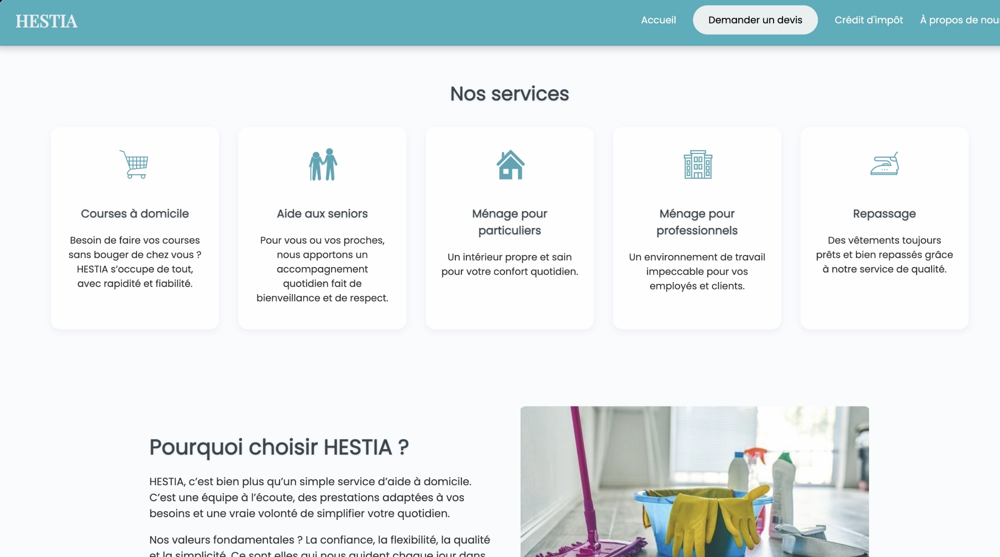
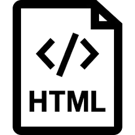

Stage – Site Web pour Hestia
Immersion Professionnelle - Aide à la personne

Contexte Professionnel
Lors de mon stage de fin d’année chez Hestia, j'ai eu pour mission de digitaliser l'image de l'entreprise. L’enjeu était de concevoir une plateforme web intuitive permettant aux seniors et à leurs familles de découvrir les services d'aide à domicile et d'effectuer des demandes de devis en ligne simplement.
Objectifs & Besoins
- Création d'une identité visuelle rassurante et professionnelle.
- Développement d'un formulaire dynamique de demande de devis.
- Optimisation Responsive Design pour une lecture sur tablettes.
- Structuration de l'information pour une navigation simplifiée.
Stack Technique

HTML5 / CSS3 JavaScript
JavaScript
 PHP
PHP
 MySQL
MySQL
 VS Code
VS Code
Réalisations
- Maquettage : Réflexion sur l'UX (Expérience Utilisateur) pour une cible senior.
- Backend : Mise en place de la base de données MySQL pour le stockage des demandes.
- Adaptabilité : Utilisation de Flexbox et CSS Grid pour un rendu mobile parfait.
- Communication : Réunions hebdomadaires pour valider les étapes du projet.
Bilan du Stage
- Capacité à traduire un besoin métier en solution technique.
- Autonomie complète sur le cycle de vie du projet (conception à la mise en ligne).
- Maîtrise des interactions complexes entre formulaires PHP et bases de données.
- Sensibilité accrue aux enjeux du web accessibilité.